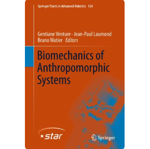

Most of my projects are interdisciplinary work and would belong to multiple categories, however, the following categorization can provide a helpful way to navigate among them:
  |
Bio-inspired Autonomous Robotics:
Robots will become ubiquitously useful only when they require just a few attempts to teach themselves to perform different tasks, even with complex bodies and in dynamic environments. Vertebrates use sparse trial and error to learn multiple tasks, despite their intricate tendon-driven anatomies, which are particularly hard to control because they are simultaneously nonlinear, under-determined and over-determined. However, these complex body structures provides them with versatility, agility, efficiency, and adaptability levels way above the current robotic standards. Getting inspired form biological systems, I work on developing few-shot, minimal prior-kowledge and sensory data systems to develop the next generation of bio-inspired robots that feel and act more similar to biological systems. Below is a select list of relevant publication on this project: Bio-Signal Processing:Decoding brain signals (Brain-Computer Interfaces)In Marjaninejad et. al. 2023, we have introduced a Maximum Likelihood estimator with Poisson assumption based decoding pipeline for the spiking neural activity recorded from a Posterior Parietal Cortex (PPC) of a human participant. We have shown it increases decoding performance compared to the state of the art used for a classification task that was to predict the imagined hand gestures. Signal to Noise Ratio (SNR) improvement for Electrocardiogram (ECG) recordingsIn Marjaninejad et. al. 2014 (i), we have used Ensemble Empercial Mode Decomposition to enhanse SNR of ECG recordings to help with the precision of cilinical assesments. EMD is is an adaptive time-space analysis method suitable for processing series that are non-stationary and non-linear. It does so by decomposing signal into its main Intrinsic Mode Functions (IMFs). In Ensemble EMD, we further introduce and average the select IMFs of the same or similar signals that are contaminated with white noise to get a better estimation of the original signal. Hands-free control of an electrical wheelchair using Electrooculography (EOG)In Marjaninejad et. al. 2014 (ii), we have proposed a low-cost, EOG based hands-free control pipeline for an electrical wheelchair. The proposed pipeline includes both hardware and software design that I designed, built, and optimized for the project. Optimizing blood glucose controller using Genetic Algorithm (GA)The goal of this project is to deliver an efficient and reliable controller for the blood glucose level for type-I diabetic patients. I was in charge of the hyper-parameter optimization and I used Genetic Algorithm. The resulting controller provided all the desired metrics while beating the similar alternative approaches Quantifying and gamifying the pathologic tremor assessment process in Virtual Reality (VR)In this award winning hackaton project, we developed a VR based platform that gamifies the assessment protocol for tremor assessment and provides accurate and comparable metrics in line with, yet improving on the current cilinical practices Utilzing Electromyogram (EMG) signal and Inertial Measurement Unit (IMU) readings using the Myo band to control a robotic armIn this project, I led a group of very motivated interns at the Valero Lab at USC to utilize EMG and IMU recordings from a commercially available Myo band and its SDK to control a servo-driven robotic clipper hand Biomechanics:Understanding and modeling of the tendon-driven musculoskeletal systemsIn a variety of papers on this topic, using a variet of AI/ML models such as the GA and ANN, we have addressed needs in modelling, predicting, and controlling tendon-driven systems, wether biological systems or bio-inspired robots. Bipedal locomotion and gate pattern studiesIn this subgroup of research topics, we have performed studies from providing better understanding on means to provide stability for bio-inspired robots to the role of cyclical pattern generators in human locomotion.
|